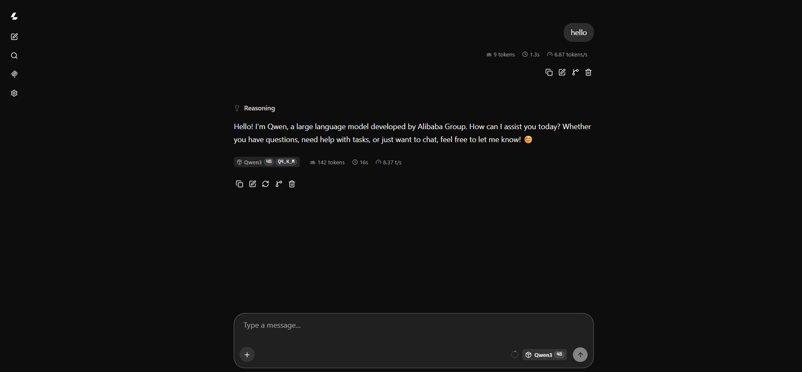

[01] GITHUB PROJECTSPINNED / GITHUB
Portable USB AI
Portable offline AI assistant powered by llama.cpp and GGUF models. Run a private local chatbot directly from a USB drive on Windows with no cloud, telemetry, or internet required.
Shellaiartificial-intelligenceggufgguf-modelgguf-modelsllamallama-cpp